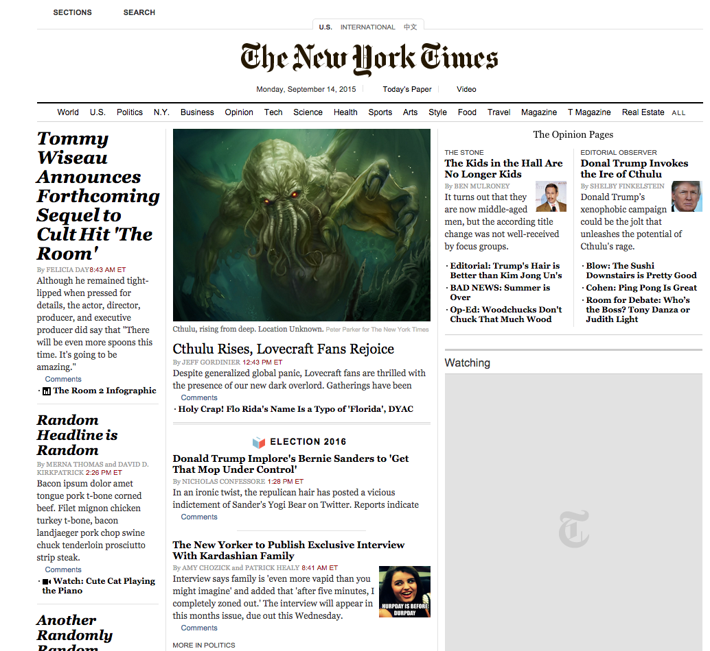

Introduction
I'm a future full-stack web developer, presently re-discovering my love coding so I can eventually start Me Inc. After mastering html and css, I plan to conquer Angular, as well as a backend language framework (probably Ruby/Rails, but I haven't ruled python out completely).
The most important thing to me is health and wellness - physical, mental, and spiritual. I believe that these are all vital parts of each human, and you have to take care of each of them to keep yourself running optimally.
I really value freedom of thought, creativity, and perserverance. Also, pugs. Can't get enough of those little guys.
Where I'm From
The whole province of Ontario is my home - I've been all over the place. Although Ottawa is presently called home, my heart is in Peterborough for some weird reason. I love that place.
More About Me
What are your favorite hobbies?
My number one hobby is bodybuilding. So basically lifting heavy things and preparing food. That said, I really love surfing and wish I could do it often enough to call it a hobby.
What's your dream job?
The ultimate dream is create a successful tech or fitness or tech/fitness startup. In the interim, I would really like to get involved in the early days of a startup, working with like-minded people, ideally in a dog-friendly office.
What music have you been listening to lately?
My playlist these days consists of: Arms and Sleepers, Tycho, Knife Party, Latitudes, Jack U, and perhaps a bit of Taylor Swift.
Recent Projects
Hack the New York Times
- 
- Replaced original content from the New York Times with humorous replacement substitutes using Chrome developer tools to manipulate the sites HTML and CSS.
Karma Landing Page Mock-up

- Accurately recreated the landing page for Karma, a mobile startup, using HTML and CSS.
{kind=link}